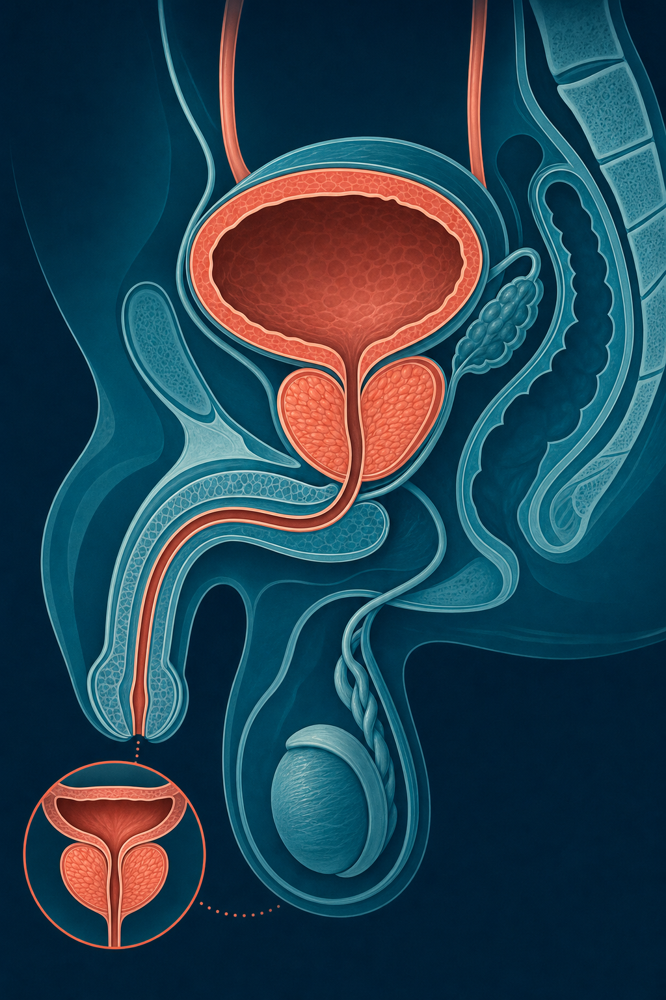
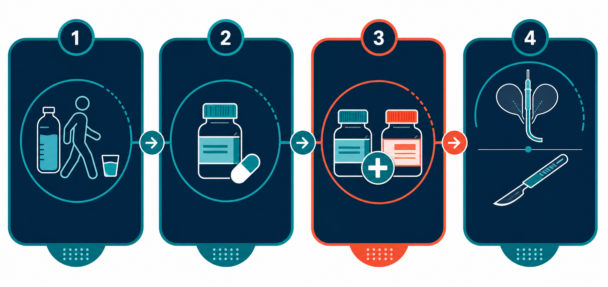

Key Takeaways
- BPH-related LUTS affects an estimated 38 million men over age 30 in the U.S. — roughly one in four — and two of every three men age 50 and older.[7]
- The 2026 AUA guideline update contains 62 recommendations across three parts: Presentation & Evaluation, Medical Management, and Procedural/Surgical Management — replacing the 2023 version.[4]
- Alpha blockers (silodosin, alfuzosin, tamsulosin) produce symptom relief within 24–48 hours; 5-ARIs (finasteride, dutasteride) require 6–12 months but shrink the prostate for men with volumes ≥30 mL.[7]
- Tadalafil 5 mg daily is now an established option for LUTS with or without erectile dysfunction and may be combined with a 5-ARI for select patients per the 2026 AUA guideline.[1]
- Prostate artery embolization (PAE) was upgraded from Grade C to Grade B in the 2026 AUA guideline for prostates ≥50 cc; Aquablation evidence was extended to the 80–150 mL range.[3]
- Only about 1% of men with LUTS from BPH ultimately require a surgical procedure; most are managed effectively with lifestyle changes and medication alone.[7]

What Is BPH, and Why Does It Cause So Many Urinary Symptoms?
The prostate gland sits directly beneath the bladder, and the urethra — the tube that carries urine out of the body — passes straight through its center. When the prostate enlarges, it can squeeze the urethra, making urination more difficult, slower, and incomplete. That mechanical reality is the core of what makes BPH so disruptive to daily life.
BPH stands for benign prostatic hyperplasia — a condition in which the glandular and stromal tissue within the prostate's transition zone proliferates in a non-cancerous way.[1] The key word is benign: BPH is not cancer, does not increase cancer risk, and does not transform into cancer. The term LUTS — lower urinary tract symptoms — describes the collection of voiding and storage problems that enlarged or overactive bladder conditions can produce, BPH being the most common cause in older men.
The prostate goes through two major growth phases in a man's life. The first occurs during puberty. The second begins around age 25 and continues throughout life — meaning every man's prostate grows slowly over decades.[5] Whether that growth produces symptoms depends on anatomy, the degree of bladder involvement, and individual variation. Some men with significantly enlarged prostates have minimal symptoms; others with modest enlargement have severely disrupted lives. Prostate size alone does not determine symptom severity.
BPH affects 5–6% of men ages 40–64 and 29–33% of men ages 65 and older.[5] Among men older than 50, it is the most common prostate condition. The condition rarely produces symptoms before age 40, but the groundwork is laid well before symptoms appear.
What Causes BPH and Lower Urinary Tract Symptoms
The exact trigger for pathologic prostate growth is not fully understood. What is known is that age-related changes in sex hormone balance drive the process. As men age, total testosterone levels decline while relative estrogen levels rise. Dihydrotestosterone (DHT) — converted from testosterone by the enzyme 5-alpha reductase — remains active in prostate tissue and continues to stimulate cellular growth. This is why drugs that block 5-alpha reductase (finasteride and dutasteride) can shrink the prostate over time.
Within the prostate, the growth occurs primarily in the transition zone — the inner portion of the gland immediately surrounding the urethra. As this zone expands, it creates a ring of pressure around the urethra, producing what is called bladder outlet obstruction. The bladder has to work harder to push urine through a narrowed channel, which leads first to bladder wall thickening (detrusor hypertrophy) and eventually to changes in bladder function.
The bladder's response to obstruction partly explains why BPH produces two distinct symptom categories. Obstruction of the urethra produces voiding (obstructive) symptoms. The bladder's compensatory hyperactivity produces storage (irritative) symptoms. Over time, an overworked bladder can lose its ability to contract effectively, leading to chronic urinary retention and post-void residual urine that creates a reservoir for urinary tract infections.
Risk Factors
Age is the single strongest predictor. Beyond that, research has identified several modifiable and non-modifiable contributors:[5][7]
- Family history: A first-degree relative with BPH increases your risk meaningfully.
- Metabolic syndrome: Obesity, type 2 diabetes, and elevated triglycerides are each associated with higher BPH risk and more severe symptoms.
- Cardiovascular disease: Studies show an association between heart disease and BPH progression, though the mechanism is not fully established.
- Sedentary lifestyle: Physical inactivity consistently increases risk; regular exercise appears protective.
- Hypertension: Linked to higher LUTS severity, possibly through shared vascular pathways.
- Erectile dysfunction (ED): BPH and ED frequently coexist; both conditions reflect age-related changes in the prostate, bladder, and surrounding smooth muscle.
What does not cause BPH: prostate cancer, sexual activity, diet (no specific dietary pattern has been shown to cause or prevent BPH, though certain lifestyle changes can reduce symptom severity).
Symptoms: Obstructive vs. Irritative, and the IPSS Scale
BPH symptoms fall into two categories, and understanding the difference matters because treatment approaches can differ depending on which type predominates.
Obstructive (voiding) symptoms reflect the mechanical effect of the enlarged prostate compressing the urethra:
- Weak or intermittent urine stream
- Hesitancy — difficulty getting the stream started
- Straining to void
- Post-void dribbling
- Sensation of incomplete bladder emptying
- Urinary retention (partial or, in severe cases, complete)
Irritative (storage) symptoms reflect bladder dysfunction — urgency, frequency, and nocturia that arise from the overworked, hyperactive bladder:
- Urinary urgency (sudden, difficult-to-delay urge to urinate)
- Frequency (urinating more than 8 times per day)
- Nocturia (waking at least twice per night to urinate)
- Urgency incontinence (leakage before reaching the toilet)
Clinicians use the International Prostate Symptom Score (IPSS) — a validated 7-question questionnaire — to measure symptom severity at baseline and track response to treatment.[7] Scores range from 0 to 35: mild (0–7), moderate (8–19), and severe (20–35). The IPSS is the only urinary symptom score shown to significantly predict the risk of acute urinary retention. An IPSS of 8 or higher generally suggests treatment is worth discussing; a score of 20 or higher indicates severe impact on quality of life.
What's Changed: The 2026 AUA Guideline Update
The American Urological Association released its updated BPH/LUTS guideline on May 7, 2026 — a significant revision that replaces the 2023 version and incorporates evidence from a systematic review current through January 2025, with supplemental searches completed December 15, 2025.[4] The update includes 62 recommendations organized across three publications.
Part I — Presentation & Evaluation: Patient history, physical examination, IPSS scoring, appropriate use of PSA (via shared decision-making), uroflowmetry, and post-void residual.[1]
Part II — Medical Management: Lifestyle interventions, alpha blockers, 5-ARIs, tadalafil, combination therapies, beta-3 agonists, and population-specific medication risks.[2]
Part III — Procedural/Surgical Management: Procedural principles, patient selection, sexual function, postoperative follow-up, and retreatment rates.[3]
Key Updates in Evaluation
PSA testing is now explicitly framed as a shared decision-making conversation rather than a default evaluation step. Uroflowmetry and post-void residual measurement "may be used" — giving clinicians and patients flexibility while acknowledging these tests add value when the clinical picture is unclear. The guideline introduces a 6-month re-evaluation milestone for patients on medical therapy, providing a structured checkpoint to assess whether treatment is working before escalating.
Key Updates in Medical Management
Uroselective alpha blockers remain first-line therapy. The 2026 guideline specifically names silodosin, alfuzosin, and tamsulosin as the preferred uroselective agents. Tadalafil 5 mg daily is endorsed not just for men with coexisting LUTS and ED, but also as a monotherapy alternative for those who prefer it. A notable addition: tadalafil 5 mg may now be combined with a 5-ARI for select patients — supported by 2024 randomized trial data showing comparable urinary symptom improvement with the added benefit of better sexual function outcomes compared to tamsulosin plus a 5-ARI.[12]
On the question of cancer risk during active surveillance: the 2026 guideline clarifies that 5-ARI therapy does not increase prostate cancer progression in men on active surveillance — a clinically meaningful statement that had previously been a source of uncertainty for patients managing both BPH and low-grade prostate cancer simultaneously.
Key Updates in Procedural Management
Two procedural changes stand out. Prostate artery embolization (PAE) was upgraded from Grade C to Grade B evidence — a recognition that years of randomized trial data have established PAE as a legitimate option for prostates ≥50 cc, including patients on anticoagulation who are at higher bleeding risk from conventional surgery.[10] PAE now joins HoLEP, thulium laser enucleation (ThuLEP), and photoselective vaporization (PVP) as recommended options for anticoagulated patients.
Aquablation therapy — robotic waterjet resection — saw its evidence strengthened for the 80–150 mL prostate size range, extending beyond its previous strongest evidence base of 30–80 mL. Five-year data from the WATER II trial, published in the Journal of Urology, showed durable efficacy and low retreatment rates in men with large prostates.[11]
HIFU (high-intensity focused ultrasound) and cryoablation are explicitly not recommended outside of clinical trials — an important boundary for patients who may have encountered these options in non-academic settings.
The Decision Framework: When to Treat, When to Refer
Not every man with BPH symptoms needs treatment. The decision to initiate therapy — and which therapy — depends on three inputs: symptom severity (IPSS score), degree of bother, and clinical findings. A man with an IPSS of 5 who finds his symptoms mildly inconvenient is a different clinical scenario from a man with an IPSS of 22 who is waking four times per night.
The general framework works like this:
| Clinical Scenario | Recommended Approach |
|---|---|
| IPSS 0–7 (mild), low bother, no complications | Active surveillance — watchful waiting with annual re-evaluation; lifestyle modifications |
| IPSS 8–19 (moderate), or mild with significant bother | Lifestyle + alpha blocker or tadalafil 5 mg daily; add 5-ARI if prostate ≥30 mL; 6-month reassessment |
| IPSS 20–35 (severe), or failed medical therapy | Consider combination medical therapy; urology referral for procedural evaluation |
| Acute urinary retention | Urologic emergency — catheterization; initiate alpha blocker at time of catheterization; trial of void at 3 days |
| Complications present (recurrent UTIs, bladder stones, renal insufficiency, gross hematuria) | Urology referral; consider procedural intervention regardless of IPSS |
An important nuance in evaluation: prostate size must be established before prescribing a 5-ARI. The AUA recommends transrectal ultrasound (TRUS) to measure prostate volume accurately before initiating finasteride or dutasteride, or before surgical planning.[7] Digital rectal exam is useful but reliably identifies only prostates larger than 50 mL — it can miss smaller-but-still-significant enlargement.
Men who have primarily storage symptoms (urgency, frequency, nocturia) that do not respond to alpha blockers may have a concurrent overactive bladder component requiring separate evaluation. The differential diagnosis for LUTS is broad — bladder dysfunction, urethral stricture, neurogenic disorders, UTI, and prostate or bladder cancer can all produce similar symptoms. A thorough history and urinalysis help sort through this before treatment is started.

Treatment Options: A Full Review
Lifestyle and Behavioral Modifications
These are the starting point for mild symptoms and a supplement to medication at all severity levels. Evidence supports meaningful symptom reduction from behavioral changes alone — without the side effects of medication.
- Fluid management: Limit total fluid intake, especially in the 2–3 hours before bed or before outings where bathroom access is limited.
- Reduce caffeine and alcohol: Both increase urinary frequency and bladder irritability.
- Bladder training: Scheduled voiding every 2–3 hours and urge suppression techniques (pelvic floor contraction when urgency strikes) can reduce storage symptoms significantly.
- Double voiding: Urinating, relaxing for a moment, then urinating again — helps empty the bladder more completely.
- Physical activity: Regular exercise reduces symptom progression risk. Sedentary behavior is an independent risk factor for worsening LUTS.
- Medication review: Decongestants, antihistamines, tricyclic antidepressants, and diuretics can all worsen BPH symptoms and may be modifiable.
Alpha Blockers (Uroselective Agents)
The most commonly prescribed first-line medications for BPH-related LUTS work by relaxing smooth muscle in the bladder neck and prostate, widening the urethral channel without changing prostate size. Relief is fast — most men notice improvement within 24–48 hours. Based on a meta-analysis of 19 randomized controlled trials involving nearly 10,000 participants, all alpha blockers produce consistent symptom improvement over placebo.[7]
The 2026 AUA guideline favors the uroselective agents:
- Tamsulosin (Flomax): 0.4 mg once daily after meals; the most widely prescribed agent. Side effects include ejaculatory dysfunction and dizziness.
- Silodosin (Rapaflo): 8 mg once daily; highest alpha-1A selectivity; effective but associated with the highest rate of ejaculatory dysfunction in the class.
- Alfuzosin (Uroxatral): 10 mg extended-release once daily; notably lower ejaculatory dysfunction rate than tamsulosin or silodosin.
Important safety note: alpha blockers increase the risk of floppy iris syndrome (IFIS) during cataract surgery. If cataract surgery is being considered, alpha blockers should not be started until after ophthalmologic evaluation, and the ophthalmologist must be informed if a patient is already taking one.[7]
5-Alpha Reductase Inhibitors (5-ARIs)
Finasteride (Proscar, 5 mg daily) and dutasteride (Avodart, 0.5 mg daily) work by blocking the enzyme that converts testosterone to DHT — the primary driver of prostatic growth. Over 6–12 months, they shrink the prostate by about 20–25%, improving urine flow and reducing long-term risk of urinary retention and the need for surgery.[7]
These agents are indicated when prostate volume is ≥30 mL (or when PSA exceeds 1.5 ng/mL as a proxy for size). They are not fast — at one year or less, combination therapy with an alpha blocker is no more effective than an alpha blocker alone. Beyond one year, the combination consistently outperforms either agent individually.
PSA is reduced by approximately 50% during 5-ARI therapy. This means a PSA result must be doubled for cancer screening purposes when interpreting lab values in men on these drugs. The 2026 AUA guideline confirms that 5-ARIs do not increase prostate cancer progression in men on active surveillance — a finding that removes a barrier that had previously made some patients hesitant to use them.
Tadalafil 5 mg Daily (PDE5 Inhibitor)
Tadalafil — the same molecule used at higher doses for erectile dysfunction — works at 5 mg daily by blocking PDE5, increasing cGMP levels and relaxing smooth muscle throughout the bladder, prostate, and urethra. A Cochrane review of four randomized controlled trials (933 participants) found tadalafil similarly effective to alpha blockers for LUTS improvement.[8]
Tadalafil is the first-choice option when ED and LUTS coexist — it addresses both conditions with a single daily medication. Per the 2026 guideline, it can be combined with a 5-ARI for men who need prostate shrinkage and wish to avoid or cannot tolerate alpha blockers. One important contraindication: tadalafil must not be combined with non-selective alpha blockers (doxazosin, terazosin) due to the risk of severe hypotension.
Beta-3 Agonist (Mirabegron) and Anticholinergics
When storage symptoms dominate — urgency, frequency, nocturia — and prostate-focused medications haven't fully addressed them, bladder-targeted agents may be added. Mirabegron (Myrbetriq) relaxes the bladder during filling via beta-3 receptor agonism; it carries less urinary retention risk than anticholinergics and is preferred in older men. Anticholinergics (oxybutynin, tolterodine, solifenacin) work but require caution: they can precipitate urinary retention (especially when PVR exceeds 250–300 mL) and are associated with cognitive side effects and increased dementia risk in older patients.[7]
Combination Therapy
The most established combination is an alpha blocker plus a 5-ARI — recommended for men with moderate-to-severe symptoms and a prostate volume ≥30 mL. Dutasteride plus tamsulosin (available as Jalyn) is the most studied combination. The 2024 tadalafil/finasteride versus tamsulosin/finasteride trial (n=100) showed both regimens produced comparable IPSS improvements at three months, with the tadalafil combination offering better sexual function outcomes.[12]
Procedural Options — Evidence Summary
| Procedure | Prostate Size | Setting | 2026 AUA Highlights |
|---|---|---|---|
| TURP (transurethral resection) | 30–80 mL | OR | Gold standard; most effective for average-sized prostates; risks include retrograde ejaculation, bleeding |
| HoLEP (holmium laser enucleation) | Any size, especially >80 mL | OR | Size-independent; low retreatment rate; recommended for anticoagulated patients |
| PAE (prostate artery embolization) | ≥50 cc | Interventional radiology | Upgraded Grade C → Grade B; suitable for anticoagulated patients; preserves erectile and ejaculatory function |
| Aquablation (robotic waterjet) | 30–150 mL | OR | Evidence extended to 80–150 mL range (WATER II 5-year data); size-independent ejaculatory outcomes |
| UroLift (prostatic urethral lift) | <80 mL, no median lobe | Office | Preserves ejaculatory function; higher retreatment rate than TURP; suitable for younger men prioritizing sexual function |
| Rezum (water vapor thermal therapy) | 30–80 mL | Office | Convective steam delivery; recovery 2–4 weeks; preserves ejaculatory function in most cases |
| Simple prostatectomy (open/robotic) | >80–100 mL | OR | Reserved for very large glands not amenable to endoscopic techniques |
| HIFU / Cryoablation | N/A | Investigational | NOT recommended outside clinical trials per 2026 AUA guideline |
What Telehealth Can Do — and Cannot
BPH management involves two distinct pathways, and understanding which belongs to telehealth and which belongs in a clinic or operating room helps you plan your care efficiently.
What Works Well via Telehealth
The initial clinical conversation — history-taking, IPSS administration, and shared decision-making — can happen productively through a video visit. Lifestyle counseling (fluid management strategies, caffeine and alcohol reduction, bladder training techniques) is fully telehealth-compatible. Prescribing uroselective alpha blockers — tamsulosin, silodosin, alfuzosin — is appropriate remotely when there are no contraindications identified by history.
Tadalafil 5 mg daily for the LUTS and ED overlap population is another area where telehealth fits well. Monitoring 5-ARI therapy — after an initial in-person prostate sizing has been done — can continue via telehealth, including reviewing the PSA interpretation adjustment these drugs require. The 6-month reassessment visit recommended by the 2026 AUA guideline for patients on medical therapy is well-suited to a video appointment when no new procedural evaluation is warranted.[2]
What Requires an In-Person Visit
Several critical diagnostic elements cannot be performed remotely:
- Digital rectal exam (DRE): Assesses prostate size, consistency, and any concerning nodules; required as part of a complete BPH evaluation.
- PSA blood draw: Must be done at a laboratory; results can then be reviewed via telehealth.
- Uroflowmetry: Measures peak urinary flow rate (Qmax) — a key metric for obstruction severity.
- Post-void residual (PVR) measurement: Performed by bladder ultrasound or catheterization; essential before adding anticholinergics or in suspected retention.
- Transrectal ultrasound (TRUS): Required for accurate prostate volume measurement before starting 5-ARIs or planning procedures.
- Urodynamic studies (UDS): For complex cases with possible neurogenic components or pre-surgical planning.
- Cystoscopy: For evaluation of hematuria, suspected stricture, or pre-procedural assessment.
- All procedural interventions: PAE, Aquablation, TURP, HoLEP, UroLift, Rezum — all require specialized facilities.
A practical care model for many patients: telehealth handles the first visit, lifestyle counseling, alpha blocker initiation, and follow-up monitoring. In-person visits handle the physical exam, labs, imaging, and any procedures. These two pathways work together — neither replaces the other.
Red Flags: When to Skip Telehealth and Get Urgent Care
- Acute urinary retention: Complete inability to urinate is a urologic emergency. Do not wait. This requires catheterization and same-day urologic evaluation.
- Gross hematuria: Visible blood in the urine — particularly with clots — requires urgent evaluation to exclude bladder or prostate cancer and significant kidney pathology.
- High fever with urinary symptoms: Fever, chills, and flank pain accompanying urinary complaints suggest urosepsis or pyelonephritis, both of which require in-person assessment and possible IV antibiotics.
- Neurological symptoms: New onset saddle anesthesia, leg weakness, or loss of bowel or bladder control suggests possible spinal cord pathology — a neurological emergency.
- Rapidly rising PSA: A significant, unexplained PSA rise requires in-person urologic evaluation to exclude prostate cancer — this cannot be appropriately managed via telehealth alone.
- Signs of renal failure: Decreased urine output combined with BPH symptoms, flank pain, or elevated creatinine on labs indicates possible obstructive uropathy requiring urgent urologic assessment.
Acute urinary retention deserves emphasis. The 2026 AUA guideline specifically recommends initiating an alpha blocker immediately at the time of urethral catheterization, then attempting a trial without catheter (TWOC) after three days.[1] This approach — rather than waiting and watching — has been shown to improve the odds of successful voiding after retention. It is not something telehealth can manage, but it is something a telehealth physician can help identify and direct you toward appropriately.
Frequently Asked Questions
No. BPH and prostate cancer are separate conditions. Having an enlarged prostate does not increase your risk of developing prostate cancer, and BPH does not transform into cancer.[6] They do share the same organ, so both conditions can coexist, and certain symptoms — particularly a rapidly rising PSA — warrant investigation. Your physician may recommend PSA testing based on a shared decision-making conversation, but a BPH diagnosis alone is not a cancer warning sign.
Alpha blockers work quickly. Most men notice improved urine flow and reduced urgency within 24–48 hours of the first dose, with continued improvement over the first one to two weeks. They work by relaxing smooth muscle in the prostate and bladder neck — a mechanical effect that does not require weeks of tissue change. If you notice no benefit after two to four weeks, a follow-up evaluation is appropriate to assess dosing, prostate size, and whether additional therapy is warranted.
Ejaculatory dysfunction — reduced or absent ejaculation — is the most common sexual side effect of tamsulosin and other uroselective alpha blockers. For most men, this effect resolves after stopping the medication. Silodosin has the highest rate of ejaculatory dysfunction in the class; alfuzosin has a notably lower rate.[7] If sexual side effects are a concern, switching to alfuzosin or transitioning to tadalafil 5 mg daily — which preserves sexual function and addresses LUTS comparably — is a reasonable discussion to have with your physician.
The 2026 AUA guideline recommends PSA testing as a shared decision-making process, not a default routine step in BPH evaluation.[1] A BPH diagnosis alone does not mandate PSA screening. Your physician may recommend it based on your age, family history, symptoms, and physical exam findings. One important note: men taking 5-ARI medications (finasteride or dutasteride) have PSA values suppressed by approximately 50% — so a reported value must be doubled for cancer screening interpretation purposes.
Only about 1% of men with BPH-related LUTS ultimately require a surgical procedure.[7] Procedural intervention is typically considered when: lifestyle changes and medications have not provided adequate relief; symptoms are severe enough to significantly affect quality of life; complications develop such as acute urinary retention, recurrent UTIs, bladder stones, or kidney damage; or the patient prefers to avoid long-term daily medication. Options range from minimally invasive office procedures (UroLift, Rezum) to endoscopic procedures (TURP, HoLEP) to newer approaches like Aquablation and PAE. Prostate size, anatomy, and personal priorities all guide the decision.
No definitive prevention strategy exists. Researchers have not identified a way to stop the age-related prostate growth that underlies BPH.[5] That said, modifiable risk factors can reduce symptom severity and slow progression. Regular physical activity, maintaining a healthy weight, controlling blood sugar and blood pressure, and limiting alcohol and caffeine all appear to lower the risk of moderate-to-severe LUTS. These same steps form the foundation of first-line management once symptoms begin — starting them before symptoms worsen is sensible preventive health maintenance.
Telehealth is well-suited to several aspects of BPH care: initial symptom assessment with IPSS scoring, prescribing and monitoring alpha blockers, lifestyle counseling, managing the LUTS and ED overlap with tadalafil, and conducting the 6-month follow-up visit recommended by the 2026 AUA guideline. What telehealth cannot replace: digital rectal exam, PSA blood draws, uroflowmetry, post-void residual measurement, urodynamic studies, cystoscopy, and any procedural intervention. A well-structured care plan often uses both — telehealth for initiation and monitoring, in-person for diagnostic procedures and physical exams.
Yes, for appropriate patients. The 2026 AUA guideline supports combining tadalafil 5 mg daily with a 5-ARI for select patients, particularly those with both LUTS and erectile dysfunction.[2] A 2024 randomized trial found that tadalafil plus finasteride produced comparable LUTS improvements to tamsulosin plus finasteride, with better sexual function outcomes.[12] One firm contraindication: tadalafil must not be combined with non-selective alpha blockers (doxazosin, terazosin) because of the risk of severe hypotension.
Bottom Line
BPH and LUTS affect the majority of men as they age — but most cases can be managed effectively without surgery. The 2026 AUA guideline update gives clinicians clearer, more current tools: shared decision-making on PSA testing, a structured 6-month reassessment milestone, upgraded evidence for PAE, expanded Aquablation evidence, and explicit endorsement of the tadalafil-plus-5-ARI combination for the right patient.
The practical takeaway is this: if you have urinary symptoms that are affecting your sleep, your daily activities, or your quality of life — start with a conversation. That first conversation can happen via telehealth in many cases. What follows — the physical exam, imaging, labs, procedures — will determine the full picture and the right treatment path. Neither telehealth nor in-person care alone covers the full spectrum of BPH management. Together, they do.
Current evidence supports a stepwise, patient-centered approach: lifestyle first, uroselective alpha blockers or tadalafil for moderate symptoms, 5-ARI added when the prostate is large enough to warrant shrinkage, and procedural options reserved for those who fail medical therapy or develop complications. That framework is now better defined than it has ever been.
References
- Goueli R, Badlani GH, Welliver C, et al. Management of Lower Urinary Tract Symptoms Attributed to Benign Prostatic Hyperplasia: AUA Guideline (2026) Part I: Presentation and Evaluation. J Urol. 2026 May 7. doi:10.1097/JU.0000000000005097. PMID 42095481. https://pubmed.ncbi.nlm.nih.gov/42095481/
- Goueli R, Badlani GH, Welliver C, et al. Management of Lower Urinary Tract Symptoms Attributed to Benign Prostatic Hyperplasia: AUA Guideline (2026) Part II: Medical Management. J Urol. 2026. doi:10.1097/JU.0000000000005098. https://www.auajournals.org/doi/10.1097/JU.0000000000005098
- Goueli R, Badlani GH, Welliver C, et al. Management of Lower Urinary Tract Symptoms Attributed to Benign Prostatic Hyperplasia: AUA Guideline (2026) Part III: Procedural/Surgical Management. J Urol. 2026. doi:10.1097/JU.0000000000005099. https://www.auajournals.org/doi/10.1097/JU.0000000000005099
- American Urological Association. AUA Releases the Management of Lower Urinary Tract Symptoms Attributed to Benign Prostatic Hyperplasia Guideline [press release]. GlobeNewswire. May 7, 2026. https://www.globenewswire.com/news-release/2026/05/07/3290220/0/en/american-urological-association-releases-the-management-of-lower-urinary-tract-symptoms-attributed-to-benign-prostatic-hyperplasia-guideline.html
- National Institute of Diabetes and Digestive and Kidney Diseases. Prostate Enlargement (Benign Prostatic Hyperplasia). Updated October 2025. https://www.niddk.nih.gov/health-information/urologic-diseases/prostate-problems/prostate-enlargement-benign-prostatic-hyperplasia
- Mayo Clinic. Benign Prostatic Hyperplasia (BPH) — Symptoms and Causes. Updated December 2025. https://www.mayoclinic.org/diseases-conditions/benign-prostatic-hyperplasia/symptoms-causes/syc-20370087
- Arnold MJ, Gaillardetz A, Ohiokpehai J. Benign Prostatic Hyperplasia: Rapid Evidence Review. Am Fam Physician. 2023;107(6):613–622. https://www.aafp.org/afp/2023/0600/benign-prostatic-hyperplasia
- AAFP Clinical Inquiries. Tadalafil for the Treatment of Lower Urinary Tract Symptoms in Men with BPH. Am Fam Physician. January 2024. https://www.aafp.org/afp/2024/0100/fpin-hda-benign-prostatic-hyperplasia
- Guideline Central. 2026 AUA Management of LUTS Attributed to BPH Guideline Spotlight. May 22, 2026. https://www.guidelinecentral.com/insights/may-2026-aua-lowerurinarysymptomsbenignprostatichyperplasia-guideline-spotlight/
- Bagla S. AUA 2026 Guidelines Upgrade PAE to Grade B for BPH Treatment [LinkedIn post]. May 8, 2026. https://www.linkedin.com/posts/sandeep-bagla-b6782b4a_bph-aua-pae-activity-7458571405350105089-I_G2
- Cleveland Clinic Consult QD. Aquablation Therapy in Large Prostates (80–150 mL): WATER II 5-Year Results. December 2023. https://consultqd.clevelandclinic.org/does-size-matter-not-for-aquablation-therapy
- Gul M, et al. Tadalafil versus tamsulosin as combination therapy with 5-alpha reductase inhibitors for BPH-related LUTS. PubMed. PMID 38308714. February 2024. https://pubmed.ncbi.nlm.nih.gov/38308714/